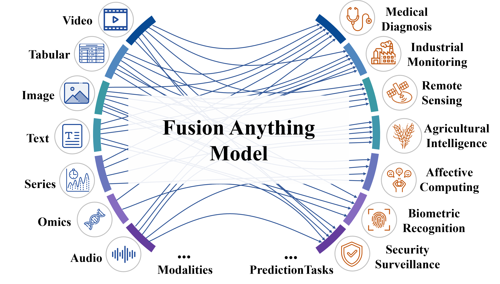
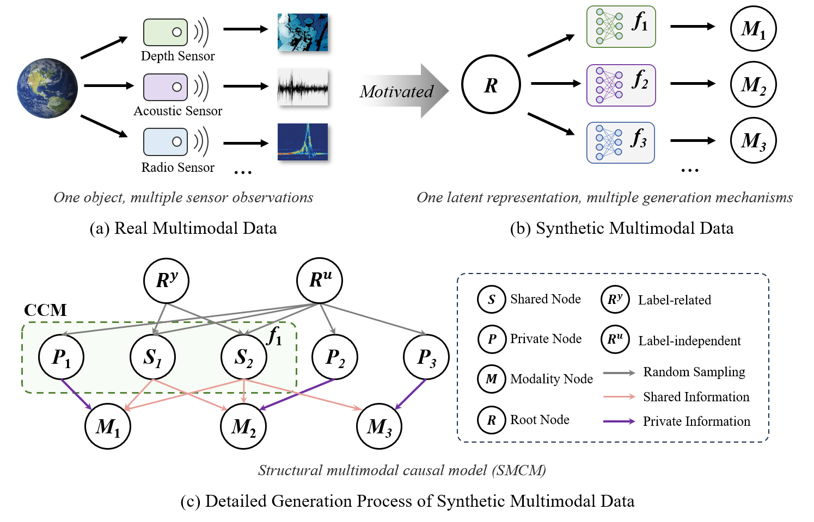
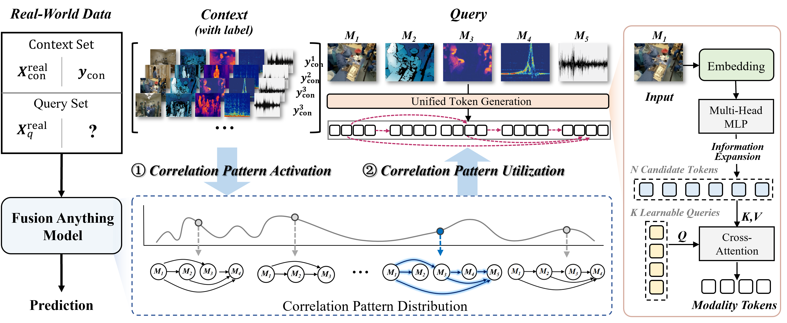
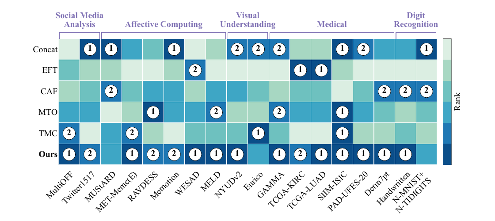

FusionAnything
学习可迁移的多模态关联，面向任意模态组合与预测任务。
2 Beijing University of Posts and Telecommunications
† 共同贡献 ‡ 项目负责人 * 通讯作者
预印本 · 2026

从固定融合
到开放场景。
多数多模态模型围绕预先定义的模态集合和单一预测目标进行训练。
图像 + 文本 → 模型 A
音频 + 视频 → 模型 B
临床图像 + 患者元数据 → 模型 C
新模态 → 重新训练
一个模型能否适应任意模态组合和任意预测任务？
为缺失世界生成
合成数据。
当真实世界的多模态数据稀缺时，Structural Multimodal Causal Models 能生成多样的关联模式。

根表示
共享的潜在状态提供底层信息。
共享节点
选定的信息可以穿过多个模态节点。
私有节点
模态特有的变化保留在局部。
一个模型，许多
预测任务。
Fusion Anything 将基于上下文的预测从结构化数据扩展到异构多模态场景。

编码
读取可用模态。
映射
将它们映射到统一 token 空间。
推理
从带标签的上下文样本中推断。
保留证据的
结构。
Hierarchical multimodal attention 在三个层级上建模关系，而不是把所有 token 当作无序序列。
| 层级 | 建模对象 | 意义 |
|---|---|---|
| 模态级 attention | 单一模态内部 token 之间的依赖 | 保留模态特有的表示 |
| 跨模态 attention | 同一样本内不同模态之间的交互 | 捕捉互补信息与共享信息 |
| 样本级 attention | 上下文样本之间的信息 | 推断任务相关的关联模式 |
任务就在
上下文中。
在推理时，带标签的示例识别应当使用的关联；模型参数保持不变。
x₂ → y₂
x₃ → y₃
x₄ → y₄
Anything
关联模式
预测
与专用模型
竞争。
| 数据集 | Fusion Anything ACC (%) | 专用方法均值 ACC (%) | 差值（百分点） |
|---|---|---|---|
| GAMMA | 70.00 | 62.33 | +7.67 |
| NYUDv2 | 59.33 | 49.57 | +9.76 |
| MultiOFF | 63.76 | 59.28 | +4.48 |
| MET-Meme(E) | 38.39 | 33.08 | +5.31 |
| Handwritten | 98.75 | 83.48 | +15.27 |
| WESAD | 83.35 | 63.19 | +20.16 |
| MELD | 64.29 | 57.66 | +6.63 |
| MUStARD | 70.29 | 70.97 | −0.68 |
| TCGA-KIRC | 72.73 | 68.08 | +4.65 |
| TCGA-LUAD | 60.66 | 55.96 | +4.70 |
| PAD-UFES-20 | 76.85 | 72.55 | +4.30 |
| N-MNIST+N-TIDIGITS | 94.28 | 87.18 | +7.10 |
在不同数据世界中
保持稳定。
当模态、领域和预测任务发生变化时，Fusion Anything 仍然接近排名顶部。

超越表格数据
基础模型。
Fusion Anything 在这八个数据集上的 ACC 均有所提升；相较 TabPFN，AUC 表现不一。
更多上下文，
通常带来更强预测。
在五个数据集上，准确率总体随上下文增加而提升，但存在局部波动，收益也会逐渐趋缓。
更换编码器，
保持优势。
窄屏下可左右滑动以查看全部编码器列。
从固定模态
到可迁移关联。
Fusion Anything 从合成因果世界中学习广泛的多模态关系，再通过上下文示例激活相关关联。
关联模式
相关关联
多模态设置中
应用
Fusion
Anything。
面向超越预定义模态组合的预测任务的广义多模态基础模型。
Huizi Cui1† · Zongbo Han2†‡ · Chenggong Ding1 · Naichuan Xiao1 · Jialong Yang1 · Jingdong Chen1 · Yafei Yang1 · Guangyu Wang2 · Qinghua Hu1 · Changqing Zhang1*
1 Tianjin University
2 Beijing University of Posts and Telecommunications
† 共同贡献 ‡ 项目负责人 * 通讯作者
@article{cui2026fusionanything,
title = {Fusion Anything: A Generalized Multimodal Foundation Model},
author = {Cui, Huizi and Han, Zongbo and Ding, Chenggong and Xiao, Naichuan and Yang, Jialong and Chen, Jingdong and Yang, Yafei and Wang, Guangyu and Hu, Qinghua and Zhang, Changqing},
year = {2026},
note = {Preprint}
}